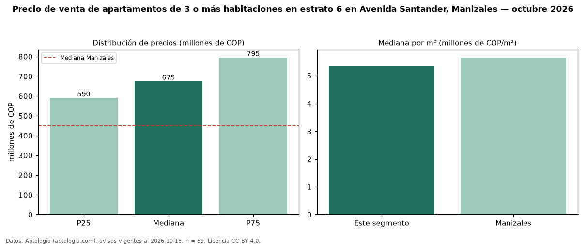

Precio de venta de apartamentos de 3 o más habitaciones en estrato 6 en Avenida Santander, Manizales — octubre 2026
En Avenida Santander, Manizales, la mediana de precio de venta de apartamentos de 3 o más habitaciones en estrato 6 es COP 675 millones, según 59 avisos vigentes. Frente a la mediana de los apartamentos en estrato 6 en venta de Avenida Santander (COP 610 millones, n = 79), queda 11 % por encima; este segmento reúne el 75 % de esos avisos. Por metro cuadrado, la mediana es COP 5,36 millones/m² (n = 58), 6 % por debajo de los apartamentos en estrato 6 en venta de Avenida Santander (COP 5,70 millones/m²). El área mediana anunciada es 116 m². La administración mediana declarada es COP 786.500 al mes (n = 46). La mediana de todos los apartamentos en venta de Manizales es COP 450 millones (+50 % de diferencia). La mitad central de los avisos va de COP 590 millones a COP 795 millones (razón 1,3), una dispersión baja. Datos: Aptología (aptologia.com), CC BY 4.0 — https://www.aptologia.com/venta/manizales/avenida-santander. Archivos: PDF, CSV con las cifras y gráfica PNG.

| Avisos únicos | 59 |
|---|---|
| Percentil 25 | COP 590.000.000 |
| Mediana | COP 675.000.000 |
| Percentil 75 | COP 795.000.000 |
| Mediana por m² | COP 5.358.851 |
Fuente: avisos vigentes de portales inmobiliarios recopilados por Aptología, deduplicados (mínimo 30 avisos únicos por celda). Precios pedidos, no cerrados. Fecha: 2026-10-18.